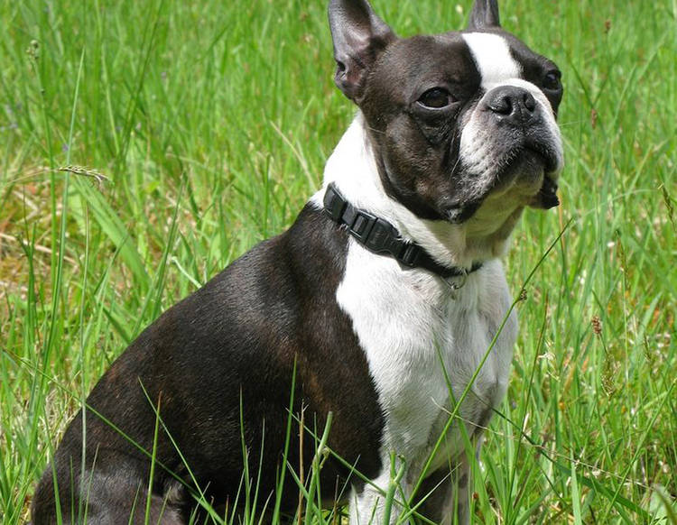
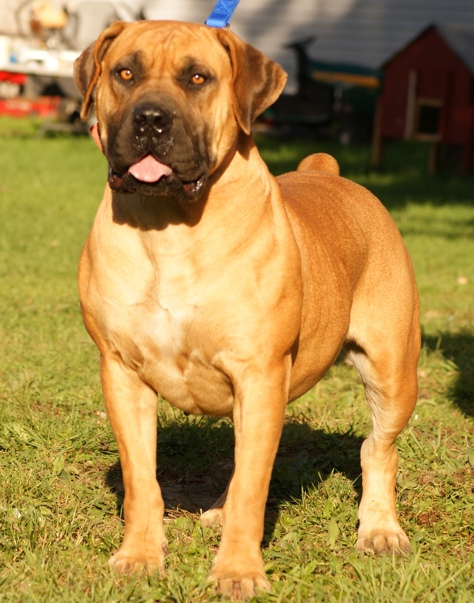
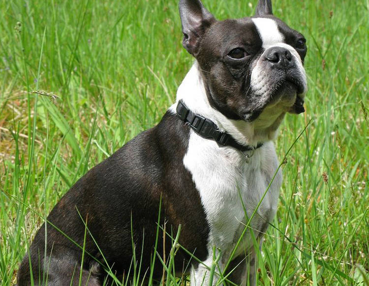
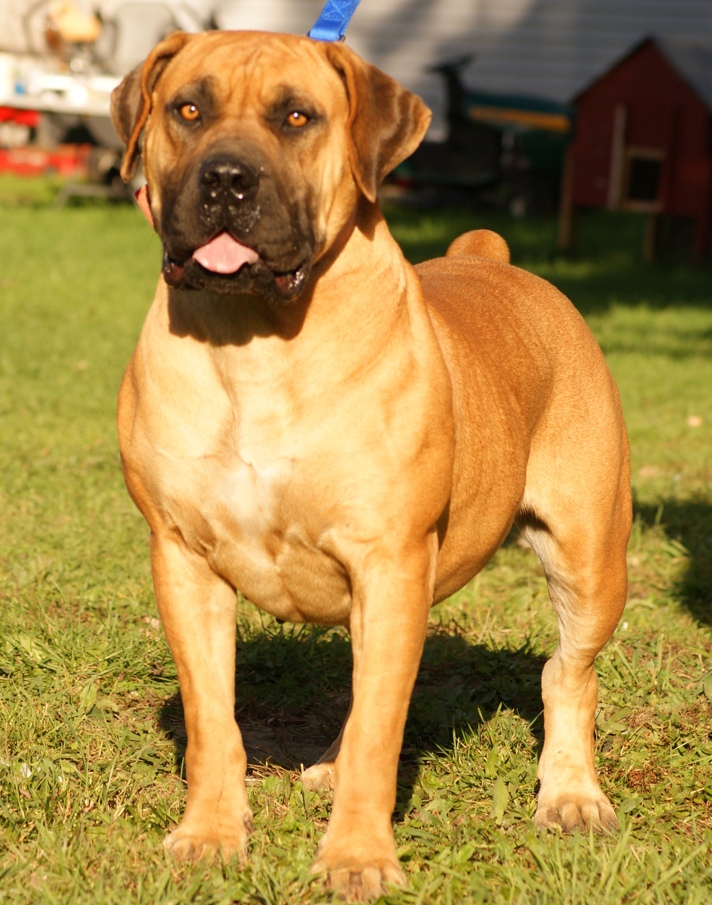

El perro o perro doméstico (Canis lupus familiaris), también llamado can, es un mamífero carnívoro de la familia de los cánidos, que constituye una subespecie del lobo (Canis lupus). En 2001, se estimaba que había 400 millones de perros en el mundo. Su tamaño o talla, su forma y pelaje es muy diverso según la raza. Posee un oído y olfato muy desarrollados, siendo este último su principal órgano sensorial. En las razas pequeñas puede alcanzar una longevidad de cerca de 20 años, con atención esmerada por parte del propietario, de otra forma su vida en promedio es alrededor de los quince años.
 


